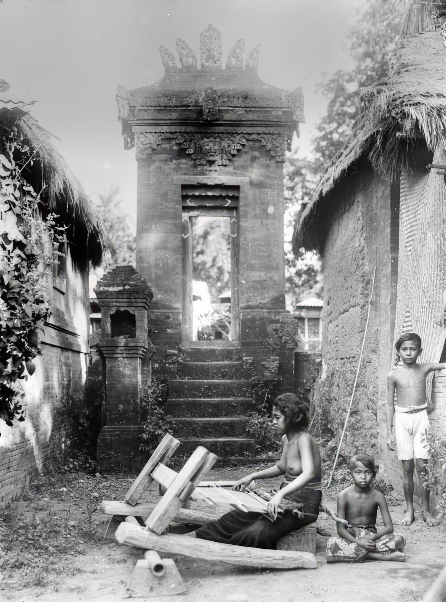

Seputar Sejarah Tanah Lot, Bali
PURA TANAH LOT
Tanah Lot,adalah salah satu Pura (Tempat Ibadah Umat Hindu) yang sangat disucikan di Bali, Indonesia. Di sini ada dua Pura yang terletak di atas batu besar. Satu terletak di atas bongkahan batu dan satunya terletak di atas tebing mirip dengan Pura Uluwatu. Pura Tanah Lot ini merupakan bagian dari Pura Dang Kahyangan. Pura Tanah Lot merupakan Pura laut tempat pemujaan dewa-dewa penjaga laut. Tanah Lot terkenal sebagai tempat yang indah untuk melihat matahari terbenam.
 TANAH LOT
TANAH LOT
SEJARAH TANAH LOT
Sejarah Pura Tanah Lot Bali Indonesia berdasarkan legenda, dikisahkan pada abad ke -15, Bhagawan Dang Hyang Nirartha atau dikenal dengan nama Dang Hyang Dwijendra melakukan misi penyebaran agama Hindu dari pulau Jawa ke pulau Bali. Pada saat itu yang berkuasa di pulau Bali adalah Raja Dalem Waturenggong. Beliau sangat menyambut baik dengan kedatangan dari Dang Hyang Nirartha dalam menjalankan misinya, sehingga penyebaran agama Hindu berhasil sampai ke pelosok pelosok desa yang ada di pulau Bali. Dalam sejarah Tanah Lot, dikisahkan Dang Hyang Nirartha, melihat sinar suci dari arah laut selatan Bali, maka Dang Hyang Nirartha mencari lokasi dari sinar tersebut dan tibalah beliau di sebuah pantai di desa yang bernama desa Beraban Tabanan. Pada saat itu desa Beraban dipimpin oleh Bendesa Beraban Sakti, yang sangat menentang ajaran dari Dang Hyang Nirartha dalam menyebarkan agama Hindu. Bendesa Beraban Sakti, menganut aliran monotheisme. Dang Hyang Nirartha melakukan meditasi di atas batu karang yang menyerupai bentuk burung beo yang pada awalnya berada di daratan. Dengan berbagai cara Bendesa Beraban ingin mengusir keberadaan Dang Hyang Nirartha dari tempat meditasinya. Menurut sejarah Tanah Lot berdasarkan legenda Dang Hyang Nirartha memindahkan batu karang (tempat bermeditasinya) ke tengah pantai dengan kekuatan spiritual. Batu karang tersebut diberi nama Tanah Lot yang artinya batukarang yang berada di tengah lautan. Semenjak peristiwa itu Bendesa Beraban Sakti mengakui kesaktian yang dimiliki Dang Hyang Nirartha dengan menjadi pengikutnya untuk memeluk agama Hindu bersama dengan seluruh penduduk setempat. Dikisahkan di sejarah Tanah Lot, sebelum meninggalkan desa Beraban, Dang Hyang Nirartha memberikan sebuah keris kepada bendesa Beraban. Keris tersebut memiliki kekuatan untuk menghilangkan segala penyakit yang menyerang tanaman. Keris tersebut disimpan di Puri Kediri dan dibuatkan upacara keagamaan di Pura Tanah Lot setiap enam bulan sekali. Semenjak hal ini rutin dilakukan oleh penduduk desa Beraban, kesejahteraan penduduk sangat meningkat pesat dengan hasil panen pertanian yang melimpah dan mereka hidup dengan saling menghormati.
 SEJARAH TANAH LOTLEGENDA
Menurut legenda, pura ini dibangun oleh seorang brahmana yang mengembara dari Jawa, yaitu Dang Hyang Nirartha yang berhasil menguatkan kepercayaan penduduk Bali akan ajaran Hindu dan membangun Sad Kahyangan tersebut pada abad ke-16. Pada saat itu, penguasa Tanah Lot yang bernama Bendesa Beraban merasa iri kepadanya karena para pengikutnya satu per satu mulai beralih pergi meninggalkannya dan menjadi pengikutnya Dang Hyang Nirartha. Bendesa Beraban tersebut kemudian memerintahkan Dang Hyang Nirartha meninggalkan Tanah Lot. Dang Hyang Nirartha menyanggupinya, tetapi sebelumnya Beliau dengan kekuatannya memindahkan bongkahan Batu besar ke laut (namun jaraknya masih tak begitu jauh dari bibir pantai) dan membangun Pura di atas bongkahan Batu besar tersebut. Beliau juga mengubah selendangnya menjadi seekor Ular penjaga Pura. Ular ini masih ada sampai sekarang dan secara ilmiah Ular ini termasuk jenis Ular laut yang mempunyai ciri-ciri berekor pipih seperti ikan, warna hitam berbelang kuning dan mempunyai Bisa Racun tiga kali lebih kuat dari Ular Cobra. Selain itu pula, Beliau kemudian menancapkan Tongkat Kayu miliknya ke Tanah yang berada di bawahnya bongkahan Batu besar tersebut, lalu seketika itu keluarlah Air Tawar yang memancar dari dalam Tanah yang berada di bawahnya bongkahan Batu besar tersebut, padahal bongkahan Batu besar itu letaknya sudah berada di laut yang notabene Air-nya adalah Asin. Dan Air Tawar yang memancar keluar dari dalam Tanah tersebut dipercaya oleh masyarakat setempat sebagai 'Air Suci' anugerah dari Sang Hyang Widhi Wasa (Tuhan) kepada masyarakat desa Beraban melalui diri Sang brahmana, Dang Hyang Nirartha. Akhirnya disebutkan bahwa setelah menyaksikan hal itu semua, maka Bendesa Beraban tersebut menjadi percaya akan kesaktian yang dimiliki oleh Dang Hyang Nirartha, dan kemudian menjadi pengikut Sang brahmana, Dang Hyang Nirartha. LEGENDA
LOKASI DAN RENOVASI
Objek wisata tanah lot terletak di Desa Beraban, Kecamatan Kediri, Kabupaten Tabanan, sekitar 13 kilometer di sebelah selatan Kota Tabanan. Di sebelah utara Pura Tanah Lot, sebuah pura lain yang dibangun di atas tebing yang menjorok ke laut. Tebing ini menghubungkan Pura dengan daratan dan berbentuk seperti jembatan (melengkung). Pura ini disebut Pura Batu Bolong.
Renovasi pertama dilakukan sejak tahun 1987 sebagai proyek perlindungan tahap I. Pada tahap ini, pemecah gelombang (tetrapod) seberat dua ton diletakkan di depan Pura Tanah Lot. Selain itu, bantaran beton serta dinding buatan juga dibangun sebagai pelindung hantaman gelombang. Namun, peletakan tetrapod mengganggu keindahan dan keasrian alam di sekitarnya sehingga diadakan studi kelayakan dengan melibatkan tokoh agama dan masyarakat setempat pada tahun 1989. Desain bangunan pemecah gelombang di bawah permukaan air dan pembuatan karang buatan dibuat pada tahun 1992 dan diperbaharui lagi pada tahun 1998. Perlindungan Pura mulai dilaksanakan sekitar bulan Juni 2000 dan selesai pada Februari 2003 melalui dana bantuan pinjaman dari Japan Bank for International Cooperation (JBIC) sebesar Rp. 95 miliar. Keseluruhan pekerjaan meliputi bangunan Wantilan, Pewaregan, Paebatan, Candi Bentar, penataan areal parkir, serta penataan jalan dan taman di kawasan DTW Tanah Lot